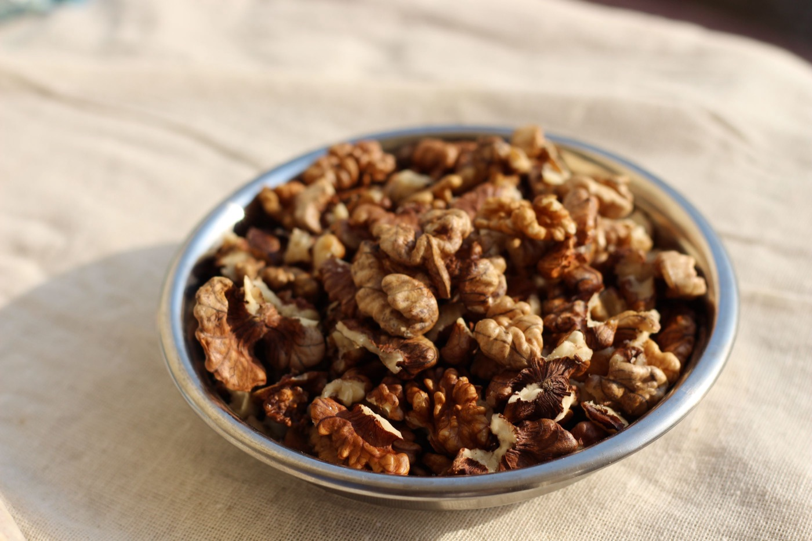
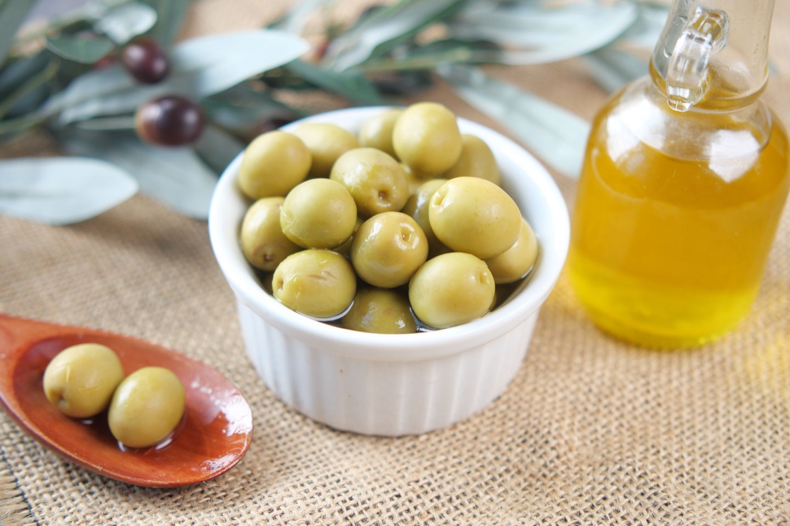
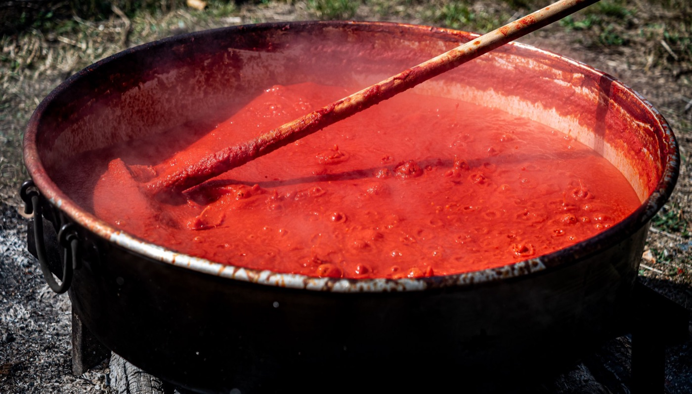
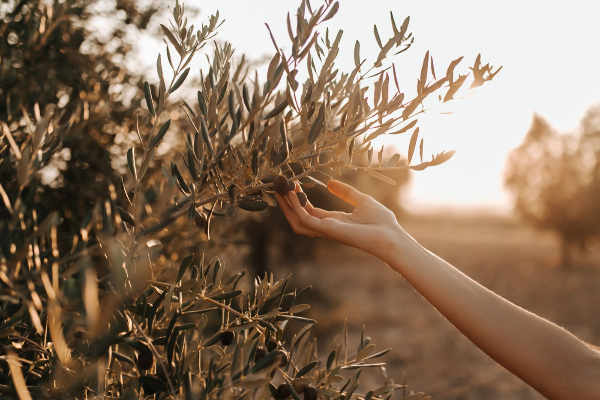
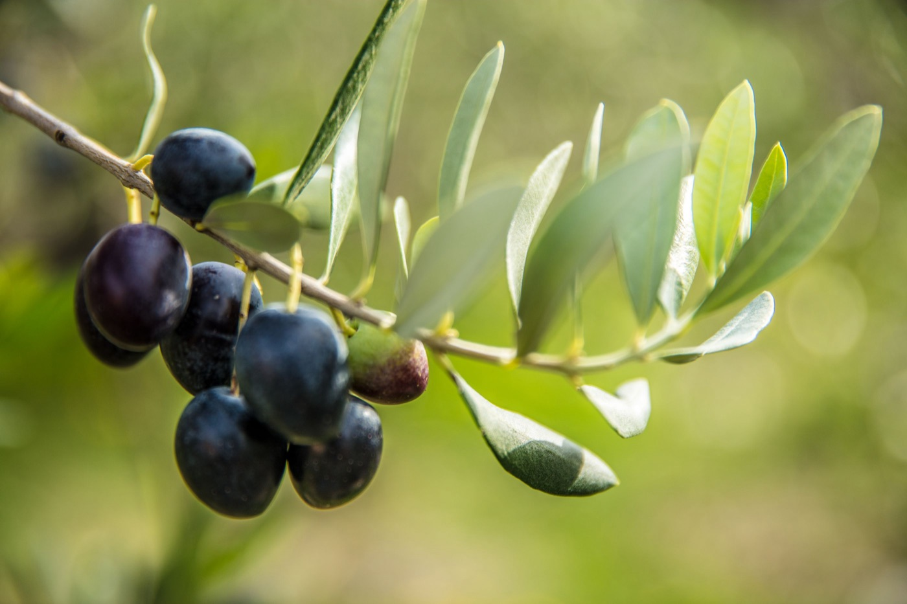

Gelibolu Yarımadası'nın bereketli topraklarında, ailemizin kendi bahçesinde yetiştirip kendi elleriyle hazırladığı ceviz, zeytinyağı ve ev salçaları. Katkısız, taze ve doğrudan üreticiden.
Koruyucu, boya, aroma ve kıvam artırıcı kullanılmaz.
Doğrudan Köyden
Aracı yok. Emeğimizin karşılığı bize, ürünün tazesi size.
Geleneksel Yöntem
Güneşte kurutma, soğuk sıkım, elle ayıklama.
Kargo veya Yerinde
Türkiye'nin her yerine kargo. Dilerseniz köyden kendiniz alın.
ailemizin ürünleri
Toprağın verdiğini, olduğu gibi getiriyoruz.
Sattığımız her ürünü ailemiz kendi elleriyle üretiyor. Seçiminizi yapın, sepete ekleyin, siparişinizi tek dokunuşla WhatsApp'tan gönderin.
Ürünlerimiz sezonluktur ve sınırlı miktarda üretilir. Stok durumu için WhatsApp'tan sorabilirsiniz.
marketten farkı
Raftaki ürünle adı aynı, hikâyesi bambaşka.
Etiketler birbirine benzer. Ama tarladan sofranıza gelene kadar geçen yol, ürünün tadını, besin değerini ve kime kazandırdığını tamamen değiştirir.
Kriter
Büyükanafarta'dan
Sıradan Market Ürünü
Nereden geliyor?
Büyükanafarta'dan, ailemizin kendi bahçesinden ve zeytinliğinden.
Farklı bölge ve ülkelerden toplanıp harmanlanmış olabilir.
Ne kadar taze?
Bu sezonun hasadı. Siparişinize göre hazırlanıp gönderilir.
Depoda ve rafta aylarca bekleyebilir. Hasat yılı çoğu zaman belli değildir.
İçinde ne var?
Sadece ürünün kendisi ve gerekiyorsa tuz. O kadar.
Koruyucu, aroma, renklendirici veya kıvam artırıcı bulunabilir.
Nasıl üretiliyor?
Geleneksel yöntemle: güneşte kurutma, soğuk sıkım, elle ayıklama.
Hız ve maliyet odaklı, yüksek ısıda endüstriyel işleme.
Paranız kime gidiyor?
Aracı yok. Ödediğiniz bedel doğrudan ürünü üreten aileye ulaşır.
Fiyatın büyük kısmı aracıya, nakliyeye ve raf maliyetine gider.
Sorunuz olursa?
Ürünü üreten bize WhatsApp'tan doğrudan sorarsınız.
Çağrı merkezi, tuşlama, bekleme.
Ürün ürün fark

🌰
Ceviz
Yeni hasat, iç rengi açık, tadı tatlı
Kabuğu ağartılmaz, doğal kurutulur
Geçmiş sezondan kalmış olabilir, acılaşır
Kabuk rengi ağartmayla açılabilir
Nasıl anlarsınız? Taze cevizin içi açık renklidir, tadı tatlıdır. Koyu renk ve acı tat bayatladığını gösterir.

🫒
Zeytinyağı
Kendi zeytinliğimizden, soğuk sıkım
Harman yok, rafine yağ karıştırılmaz
“Riviera” tipi yağ rafine yağla karışıktır
Aroması ve polifenol değeri düşüktür
Nasıl anlarsınız? İyi bir natürel sızma yağ meyve gibi kokar, damakta hafif acı bırakır, boğazı hafifçe yakar.

🍅
Salça
Güneşte, tepside günlerce koyulaşır
Sadece domates ya da biber ve tuz
Yüksek ısıda hızla koyulaştırılır
Nişasta, boya veya kıvam artırıcı içerebilir
Nasıl anlarsınız? Güneş salçası koyu ve mat kırmızıdır, kokusu yoğundur. Yemeğe bir kaşığı yeter.

🌾

🫒
elle toplandı, sevgiyle hazırlandı
biz kimiz?
Merhaba, biz Döner ailesiyiz.
Biz Mustafa ve Emine Döner. Çanakkale'nin Eceabat ilçesine bağlı Büyükanafarta köyünde çiftçilik yapan bir aileyiz.
Köyümüz Gelibolu Yarımadası'nda, Ege ile Çanakkale Boğazı arasında. 1915'te Anafartalar Muharebeleri ile tarihe adını yazdıran bu topraklarda ceviz ağaçlarımıza ve zeytinliğimize bakıyor, yaz sonunda salçamızı güneşte kendi ellerimizle hazırlıyoruz.
Ürünlerimizi araya kimseyi sokmadan doğrudan sizin mutfağınıza gönderiyoruz. WhatsApp'tan yazdığınızda karşınızda bir çağrı merkezi değil, bizzat biz oluyoruz.
Ne ekiyorsak onu satıyoruzDışarıdan ürün alıp üzerine köy etiketi yapıştırmıyoruz.
El emeği, küçük partilerSeri üretim yok. Her kavanoz, her şişe özenle hazırlanır.
Adil fiyat, adil emekAracısız satış, sizin için uygun fiyat, emeğimiz için hak ettiği karşılık demek.
Köyümüze bekleriz
İsteyen müşterilerimiz Büyükanafarta'ya gelip ürünlerimizi yerinde görebilir ve buradan satın alabilir. Gelmeden önce WhatsApp'tan haber verin; bahçede ya da tarlada olabiliriz, sizi karşılayalım.
Kargo istemiyor musunuz? Köyümüze gelip ürünleri yerinde görerek de alabilirsiniz. Sepette “Köye gelip yerinde alacağım” seçeneğini işaretleyin, siparişiniz hazır olsun.
Anafartadançevrimiçi
Merhaba, Anafartadan sitesinden sipariş vermek istiyorum. 🌿
SİPARİŞ
1. Kabuklu Ceviz (2 kg) × 1
2. Yeni Hasat Zeytinyağı (5 L teneke) × 1
3. Ev Yapımı Biber Salçası (Acı · 3 kg) × 1
Ürün toplamı: 4.050 ₺
10:24 ✓✓
Merhaba, siparişiniz için teşekkürler! 🙏 Kargo ücretsiz, yarın sabah kargoya veriyoruz. IBAN bilgimizi hemen iletiyorum.
10:26
merak edilenler
Sıkça sorulan sorular
Aradığınız cevabı bulamadınız mı? Bize WhatsApp'tan yazın, köyden cevap verelim.
Ürünleri sepete ekleyin ve “WhatsApp ile Sipariş Ver” butonuna dokunun. Sepetiniz hazır bir mesaj olarak WhatsApp'ta açılır, siz sadece gönder'e basarsınız. Dilerseniz doğrudan bize yazarak da sipariş verebilirsiniz.
Kargo ücreti ne kadar, ne zaman elimde olur?
Türkiye'nin her yerine gönderim yapıyoruz. Teslimat bulunduğunuz yere göre genellikle 1–3 gün sürer.
Köye gelip ürünleri yerinde alabilir miyim?
Elbette. Büyükanafarta'ya gelip ürünlerimizi yerinde görebilir, beğendiklerinizi buradan satın alabilirsiniz. Gelmeden önce WhatsApp'tan haber vermeniz yeterli; bahçede ya da tarlada olabiliriz, sizi karşılayalım. Dilerseniz siparişinizi sepetten “Köye gelip yerinde alacağım” seçeneğiyle önceden iletin, geldiğinizde hazır olsun.
Ödemeyi nasıl yapabilirim?
ile ödeme yapabilirsiniz. Siparişinizi onayladığımızda ödeme bilgilerini WhatsApp'tan size iletiriz.
Ürünler gerçekten katkısız mı?
Evet. Cevizimiz hiçbir işlem görmez. Zeytinyağımız %100 natürel sızmadır, başka yağ karıştırılmaz. Salçalarımızda sadece domates ya da biber ve tuz vardır. Koruyucu, boya, nişasta veya şeker kullanmıyoruz.
Cam kavanoz ve şişeler kargoda kırılır mı?
Cam ürünleri tek tek sarıp korumalı kutulara yerleştiriyoruz. Yine de koli ezik, ıslak ya da hasarlı gelirse kargo görevlisiyle birlikte açıp kontrol edin. Üründe hasar varsa teslim almayın, kargo görevlisine tutanak tutturun ve bize WhatsApp'tan haber verin; yenisini gönderelim.
İade veya değişim yapabilir miyim?
Ambalajı açılmamış ve kullanılmamış ürünleri teslim tarihinden itibaren 15 gün içinde iade edebilir ya da değiştirebilirsiniz. Ürünü göndermeden önce WhatsApp'tan bize haber verin. Ayrıntılar için Değişim ve İade Koşulları sayfasına bakabilirsiniz.
Ürünleri nasıl saklamalıyım?
Ceviz: serin ve kuru yerde, iç ceviz buzdolabında. Zeytinyağı: ışık almayan serin bir dolapta, kapağı kapalı. Salça: açtıktan sonra buzdolabında, üzerine biraz zeytinyağı gezdirerek.
Toplu ya da kurumsal sipariş verebilir miyim?
Elbette. Restoran, kafe, şirket hediyeleri ve toplu alımlar için WhatsApp'tan bize ulaşın. Stok durumuna göre size özel teklif hazırlayalım.
Ürünler neden bazen tükeniyor?
Fabrika değil, çiftçi bir aileyiz. Ürünlerimiz doğanın takvimine bağlı ve sınırlı miktarda üretiliyor. Tükenen ürünler bir sonraki hasatta yeniden geliyor. Haber almak için WhatsApp'tan yazmanız yeterli.
bu sezonun hasadı
Köyün tadı tükenmeden sofranıza gelsin.
Sorularınızı yanıtlamak, sipariş almak için WhatsApp'tayız.